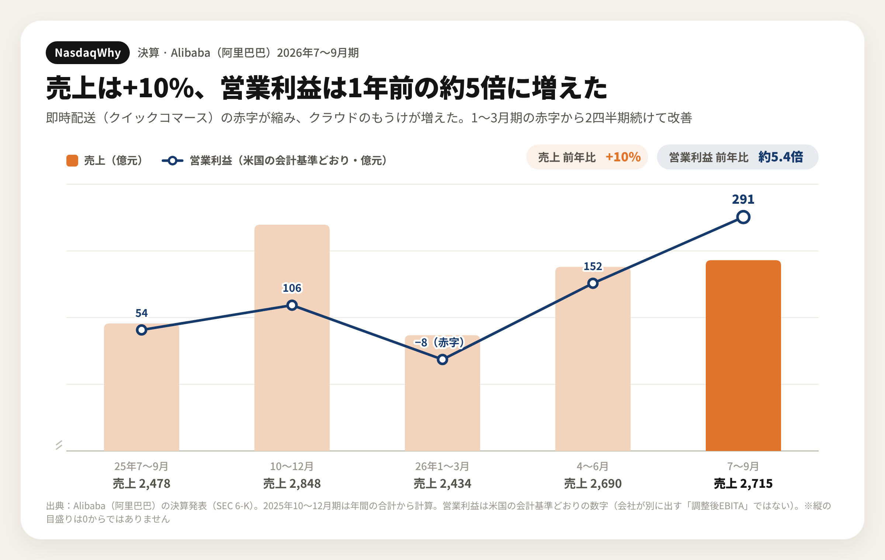
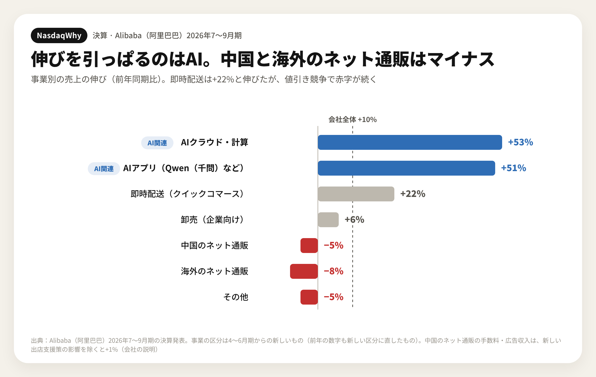
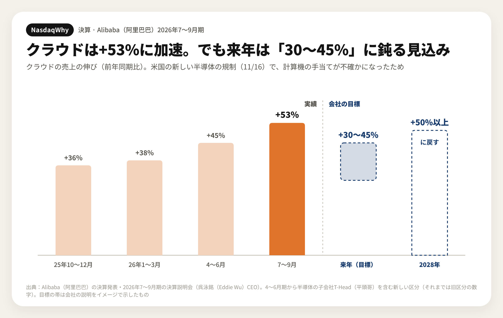
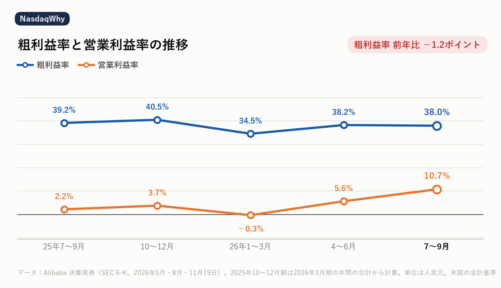
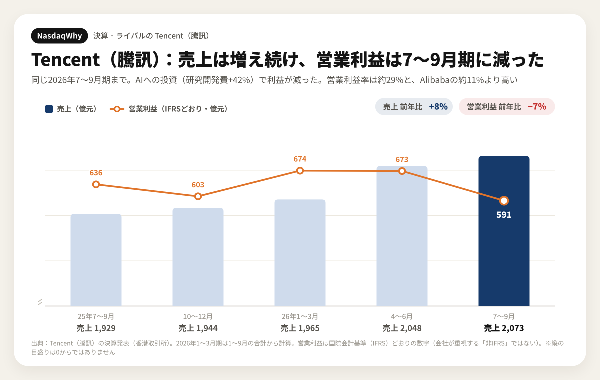
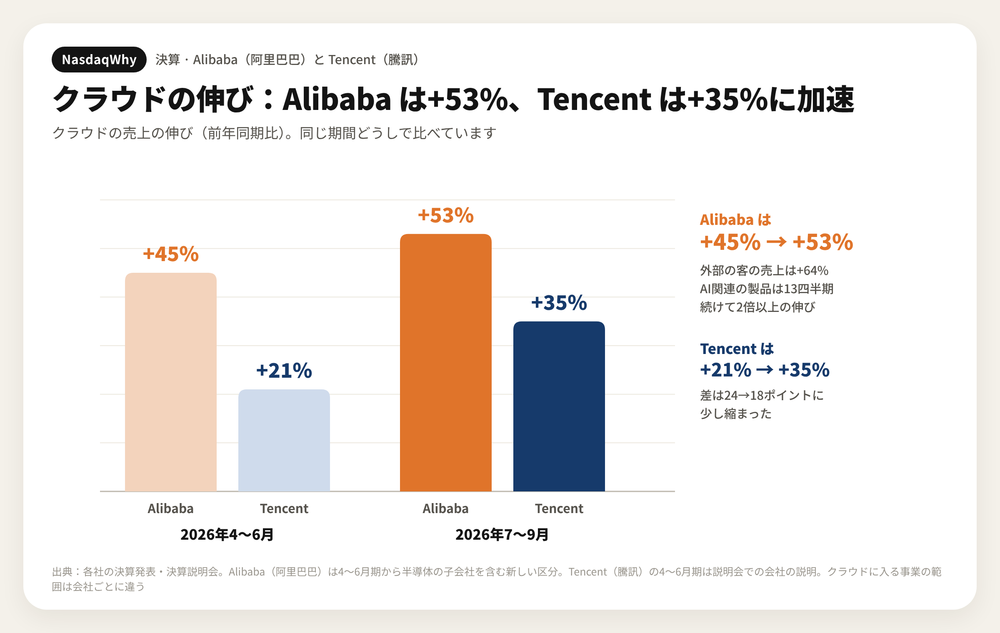

BABA｜2026年7〜9月期の決算｜決算発表 2026年11月19日（米国の取引開始前）
Alibaba（阿里巴巴）の決算：クラウドは53%増なのに、なぜ来年は「30〜45%」に鈍ると言った？
中国のネット通販・クラウド最大手のAlibaba（阿里巴巴）の7〜9月期は、売上が前年同期比10%増の2,715億元、営業利益（米国の会計基準どおり）は約5.4倍の291億元だった。AIクラウドの売上は+53%の610億元と、4〜6月期の+45%からさらに加速。Alibabaのクラウドは中国で1位（2025年のクラウド基盤のシェア約36%で、2位Huawei（華為）の約16%を大きく上回る。Omdia 調べ）。一方、決算説明会で呉泳銘（Eddie Wu）CEOは、米国の新しい半導体の規制を理由に、来年のクラウドの伸びの目標を「30〜45%」と話した。

売上は2,400億〜2,900億元の間で上下しながら少しずつ増えている（10〜12月期は中国の年末の大型セールで大きくなる）。営業利益（米国の会計基準どおり）は、即時配送の値引き競争で2026年1〜3月期に8億元の赤字になったが、4〜6月期は152億元、7〜9月期は291億元と2四半期続けて改善した。
主な数字（2026年7〜9月期）
| 今回 | 前年同期 | 前年比 | |
|---|---|---|---|
| 売上高 | 2,715億元 | 2,478億元 | +9.6% |
| 営業利益 | 291億元 | 54億元 | +442.7% |
| 営業利益率 | 10.7% | 2.2% | |
| 純利益 | 645億元 | 210億元 | +207.5% |
7〜9月期の事業別の売上
| 事業 | 売上 | 前年同期比 |
|---|---|---|
| ネット通販など | 1,972億元 | +2.0% |
| 中国の通販 | 985億元 | -5.0% |
| 即時配送 | 588億元 | +22.0% |
| 海外の通販 | 257億元 | -8.0% |
| AIクラウド | 610億元 | +53.0% |
| うちAI関連 | 179億元（2倍超） | ― |
| AIアプリ | 44億元 | +51.0% |
事業別に見ると：伸びているのはAI
売上の伸びを事業別に並べると、伸びを引っぱっているのはAIだ。AIクラウド・計算は+53%、Qwen（千問）などのAIアプリは+51%。
一方、中国のネット通販は−5%。ただし会社は、新しい出店支援策で売上から差し引いた分を除くと、出店者からの手数料・広告収入は+1%と説明している。海外のネット通販（AliExpressなど）は、EUの関税の仕組みの見直しで−8%。
即時配送は+22%の588億元と伸びたが、まだ赤字。会社は「赤字は大きく減り、1件あたりの採算が良くなった」と説明している（赤字の金額は非公表）。

会社の見通し
| 数字の見通し | 出していない |
|---|---|
| クラウドの伸び（来年） | 30〜45%が目標 |
| 2028年のクラウド | 50%以上に戻す |
| 即時配送の赤字 | 来年は半分に |
- 会社は、売上や利益の数字の見通しを出していない。
- 呉泳銘CEOは、来年のクラウドの売上の伸びの目標を「30〜45%」とし、2028年には「50%以上に戻る」と説明した。2030年に外部の客のクラウド売上1,000億ドル・利益率20%超という目標は変えていない。
- 即時配送（Taobao Instant Commerce（淘宝閃購））は、来年は赤字を半分にし、2029年3月期に黒字にするのが目標（ネット通販部門の蒋凡CEO）。
クラウドの伸びの推移と、会社の目標
クラウドの伸びは、2025年10〜12月の+36%から、+38%、+45%、+53%と4四半期続けて加速した。
一方で呉泳銘（Eddie Wu）CEOは、米国の新しい半導体の規制（11/16）で計算機の手当てが不確かになったとして、来年の伸びの目標を「30〜45%」と話した。2028年には「50%以上に戻る」としている。自社の半導体（T-Head（平頭哥））の量産が進めば、海外のチップへの頼りを減らせるという考えだ。

もうけの力

中国のネット大手と比べると
期間：どの会社も2026年7〜9月。利益率は会計の基準どおりの営業利益率（米国基準・IFRS）。各社の決算発表から。
| 会社 | 売上高 | 前年比 | 利益率 |
|---|---|---|---|
| Alibaba | 2,715億元 | +10% | 11% |
| Tencent | 2,073億元 | +8% | 29% |
| JD.com | 3,096億元 | +3.5% | 2% |
| PDD | 1,083億元 | +0.1% | 29% |
| Baidu | 308億元 | −1% | 2% |
事業の中身が大きく違う。Alibabaはネット通販・即時配送・クラウド、Tencent（騰訊）はSNS・ゲーム・広告、JD.com（京東）は自社で仕入れて売る通販（売上は大きいが利益率は低くなりやすい）、PDD（拼多多）は国内のPinduoduo（拼多多）と海外のTemu、Baidu（百度）は検索広告とAIクラウド。クラウドの伸びは、Alibaba +53%、Tencent +35%（クラウドに入る事業の範囲は会社ごとに違う）。どの会社も人民元。
ライバルのTencent（騰訊）：同じ7〜9月期までの流れ
Tencentは売上が5四半期続けて増え、7〜9月期は2,073億元（+8%）。営業利益（IFRSどおり）は591億元で、AIへの投資で前年より7%減った。
Alibabaは逆に、売上の伸びは小さめでも利益が大きく戻った。ただ利益率は、Tencentの約29%に対してAlibabaは約11%と、まだ差が大きい。
※Tencentが重視する「非IFRS」の営業利益は681億元（−6%）。ここでは比べやすいように会計の基準どおりの数字を使った。

クラウドの伸びを比べると
同じ期間どうしで比べると、4〜6月期はAlibabaが+45%、Tencentが+21%。7〜9月期はAlibabaが+53%、Tencentが+35%で、どちらも加速した。差は24ポイントから18ポイントに縮まった。
クラウドに入る事業の範囲は会社ごとに違う（Alibabaは半導体の子会社も含む）ので、伸びの差はおおまかな目安として見てほしい。

決算説明会で会社が話したこと
【AIはもうかり始めた？】呉泳銘CEOは「2四半期前にAIへの投資がもうけに変わる転換点を越え、今回はその成果がよりはっきりした」と話した。AI関連の売上を1年分に直すと717億元（最高財務責任者のToby Xu（徐宏）氏）。
【米国の規制の影響】11/16の新しいルールは「来年の製品とサービスに影響し、まだ不確かな部分がある」。データセンターの長期の目標（20ギガワット）も下方修正の可能性がある。会社は影響を評価中。
【自社の半導体】T-Head（平頭哥）の新しいAIチップ「Zhenwu（真武）V900」は2027年1〜3月に量産の予定で、前の世代の約3倍の計算力。T-Headは上場の申請も非公開で出した。呉泳銘CEOは「2030年までの計画は、もともとT-Headのチップの供給計画をもとに立てている」と話した。
【即時配送】来年は赤字を半分にし、2029年3月期に黒字にするのが目標（ネット通販部門の蒋凡CEO）。10〜12月期も赤字は縮む見込み。
【AIモデル】新しいAIモデル「Qwen4 Max」を紹介。10月には、買い物や予約をAIが代わりに行う「Qwen Go!」を始めた。
出典：決算説明会の書き起こし（singjupost.com・Investing.com）・PYMNTS の報道。発言は英語からの要約。
NasdaqWhy の視点：データから読み取れる注目点
決算資料と各社の公式データを並べて読み取れることです。将来を予想するものではありません。
- 【なぜ営業利益が5倍になったか】1年前の7〜9月期は、フードデリバリーなどの即時配送で激しい値引き競争をしていて、営業利益は54億元しかなかった。今回は即時配送の赤字が「大きく縮んだ」（会社の説明。金額は非公表）うえ、クラウドの利益（調整後EBITA）も88億元と2倍以上に増えた。会社が重視する調整後EBITAは326億元（+260%）。ネット通販部門の調整後EBITAは389億元と、前年の113億元から約3.4倍になった。
- 【なぜ純利益は3倍なのに、調整後の利益は予想に届かなかったか】純利益（株主の分）は645億元（+207%）。ただし、これは持っている他社の株の値上がり（投資のもうけ733億元）が大きい。こうした分を除いた調整後の純利益は199億元（+92%）で、市場の予想（Bloomberg 集計で約266億元）を下回った。AIのアプリ（Qwen（千問）など）の部門の赤字が105億元と、前年の34億元から3倍に広がったことも重い。
- 【なぜクラウドが加速したか】AIクラウド・計算の売上は610億元（+53%）。外部の客からの売上は+64%、AI関連の製品の売上は179億元で、13四半期続けて2倍以上の伸び。決算説明会では「AI関連の売上を1年分に直すと717億元」と説明した。利益率（調整後EBITA）も約10%から14.5%に上がり、「売れば売るほどもうかる」形に近づいている。
- 【なぜ来年は伸びが鈍ると言ったか】米国の商務省が11/16に、海外のデータセンターなどから最先端の半導体を遠隔で使うことを制限する新しいルールを出した。呉泳銘CEOは「来年の製品とサービスに影響し、まだ不確かな部分がある」と述べ、クラウドの伸びの目標を30〜45%とした。データセンターの長期の目標（20ギガワット）も下方修正の可能性があるという。会社は影響を「評価中」で、金額は出していない。
- 【お金の流れ】設備投資は505億元（+60%）で、4〜6月期の677億元よりは少なかった。営業キャッシュフローは157億元、フリーキャッシュフローはマイナス345億元。8月に新しい株を発行して約800億香港ドルを集めた。現金と運用資産は4,879億元。会社は、フリーキャッシュフローのプラスへの回復は2028年後半を目指すとしている（報道）。
- 【決算説明会から】呉泳銘CEOは「2四半期前にAIへの投資がもうけに変わる転換点を越え、今回はその成果がよりはっきりした」と話した。半導体の子会社T-Head（平頭哥）は、新しいAIチップ「Zhenwu（真武）V900」を2027年1〜3月に量産する予定で、上場の申請も非公開で出したという。最高財務責任者のToby Xu（徐宏）氏は「投資は、将来の投資のもうけの率を見ながら規律を持って進める」と説明した。
- 【同業と比べると】同じ7〜9月期で、Alibabaの売上の伸び（+10%）はTencent（騰訊、+8%）・JD.com（京東、+3.5%）・PDD（拼多多、+0.1%）・Baidu（百度、−1%）を上回った。ただ営業利益率は11%で、Tencent（29%）やPDD（29%）より低い。即時配送の値引き競争とAIへの投資の重さが残る。クラウドの伸びはTencentの+35%を上回り、差は4〜6月期の24ポイントから18ポイントに縮まった。
- 【比べるときの注意】Alibabaは4〜6月期から事業の区分を変えた（半導体の子会社をクラウドに入れ、AIアプリを独立させた）。前年の数字も新しい区分に直したもので、昔の記事の数字とは合わないことがある。また、決算期は3月までの1年で、7〜9月期は会社の数え方では「2027年3月期の第2四半期」。
次に確認したい決算・予定
- Xiaomi（小米、11/24）とKingsoft Cloud（金山雲、11/24）の決算：中国のスマホ・クラウドの需要。
- 米国の新しい半導体の規制の続報と、Alibabaが影響をどう見積もるか。
- Alibabaの次の決算（2027年2月ごろの見込み）：クラウドの伸び（30〜45%の目標の中のどこか）、即時配送の赤字がさらに縮むか、設備投資の計画の見直し。
関連リンク
出典：Alibaba 2026年7〜9月期の決算発表（2026年11月19日、SEC 6-K）・4〜6月期（8月）・1〜3月期（5月）の決算発表・決算説明会（singjupost.com・Investing.com の書き起こし、PYMNTS の報道）。市場シェアは Omdia（Yahoo Finance・entelechyasia の報道）。同業はTencent・JD.com・PDD・Baidu の2026年7〜9月期の決算発表
📝 note でも読めます（図つき・まとめ）：note.com/nasdaqwhy